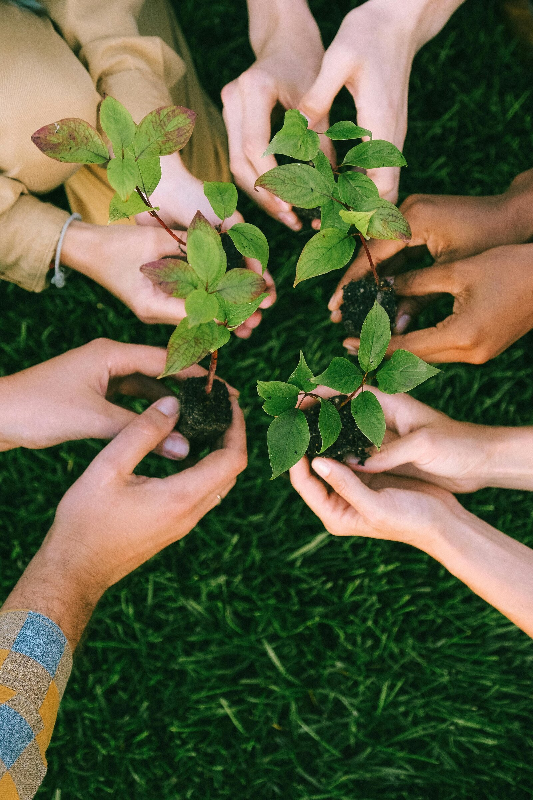
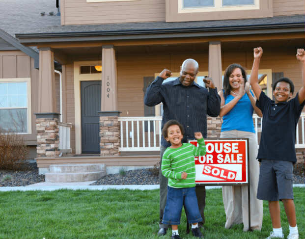
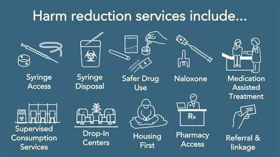

"North Carolina families deserve a true fair chance. NC WARP — Working Against Recidivism & Poverty — is a community-led nonprofit serving justice-impacted individuals and their families across Gaston County and beyond. We combine lived experience with trauma-informed, research-based tools to break the cycles of reincarceration and poverty — for good."Join Our Mission
A Hub for Stability and Success
What began as a personal journey has evolved into a mission to strengthen families nationwide. We provide a bridge to the resources that matter most—from national advocacy to local grassroots support. Each month, we highlight a local organization doing the work on the ground here in Gastonia.
Featured Local Resource: Bountiful Blessings Food Pantry
The Mission: Ensuring local families have access to quality, fresh food.
WARP advocates for those struggling to balance the reality of rebuilding a family while reentering society. We understand the nuances and stigmas of lived experience. We move beyond support to co-create solutions that ensure a true fair chance.
At Working Against Recidivism & Poverty, we believe that sustainable change happens when communities, organizations, and government agencies work together. Our approach focuses on building resilience and reducing harm with trauma-informed, research-based tools and strategies.
By collaborating with community partners, we create comprehensive support networks that empower the historically underserved to build stable, productive lives.
Our Partners
Comprehensive support through collaborative initiatives
Traditional job searching doesn't always tell the whole story of what you're capable of. We offer AI training designed to give you an edge in today's market. From automating tasks to mastering new software, our workshops empower you to use AI as a personal assistant for your professional success.

Collaborative program with housing authorities and landlords to secure stable housing for those reentering society.

Providing education and outreach on harm reduction practices to improve health and safety in our communities.
Helping justice-impacted families build resilience through trauma-informed and research based tools and strategies.
Collaboration is at the heart of our approach
Local employers who support Fair Chance hiring practices.
Colleges and training centers offering specialized programs for returning citizens.
Non-profits and community groups that provide resources and support services.
State and local agencies working to reform systems and provide support.
Transportation, overdose risk, substance use, and suicide — facts that shape our work
Of employers in NC consider reliable transportation a "must-have" for employment, creating an immediate barrier to reentry.
Returning citizens face a 40% higher risk of fatal overdose in the first two weeks after release, highlighting the critical need for immediate harm reduction support.
Of justice-involved individuals in NC report having a substance use disorder, yet fewer than 10% receive adequate treatment in the community.
Families of those impacted by the judicial system are disproportionately affected by suicide at an alarming rate, underscoring the profound mental health crisis we address.
As a 501(c)(3) nonprofit (EIN: 39-4239364), your partnership and support are tax-deductible.
Whether you're an employer, service provider, community leader, or concerned citizen, there's a place for you in our partnership network.
WORKING AGAINST RECIDIVISM AND POVERTY is a 501(c)(3) nonprofit organization. Your donation is tax-deductible to the extent allowed by law. EIN: 39-4239364